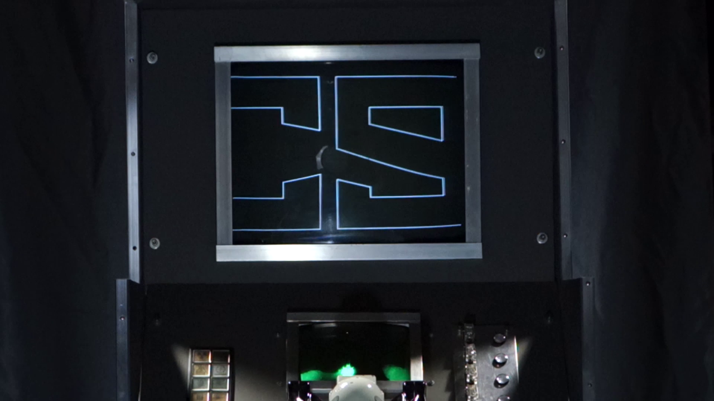
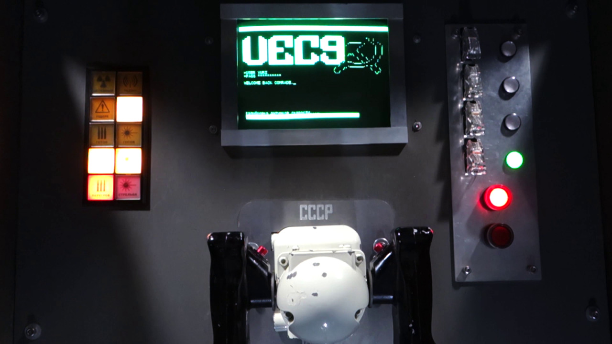
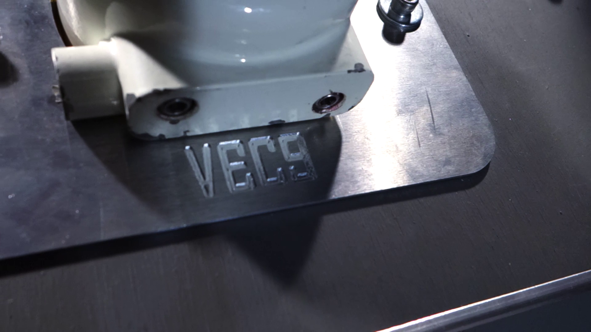
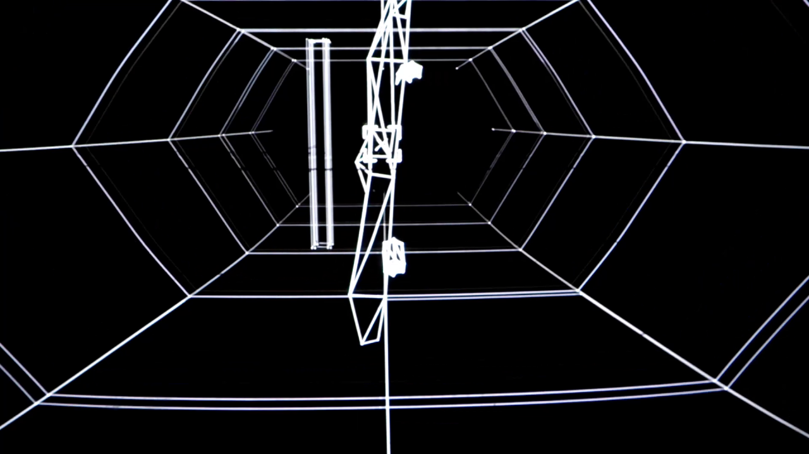
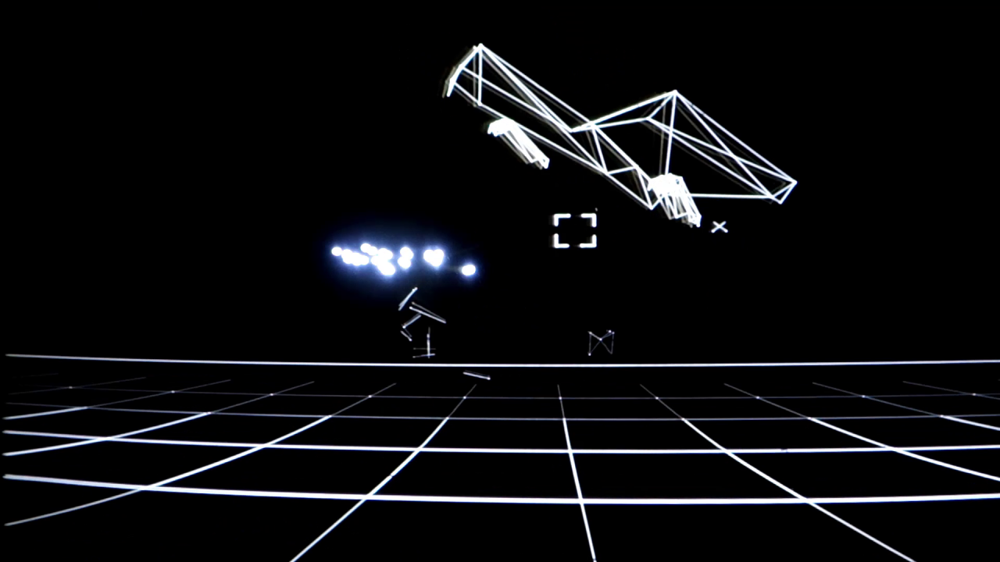
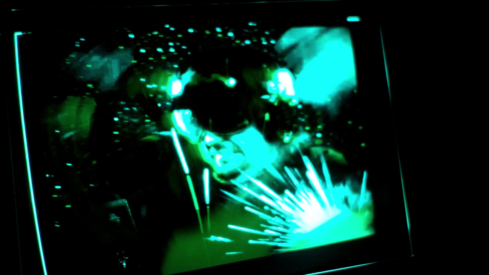
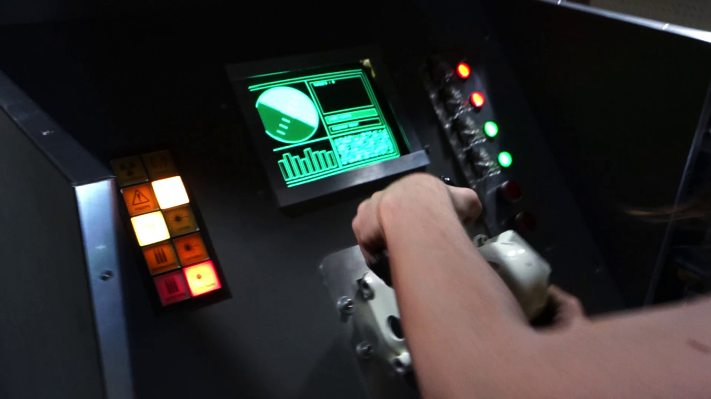
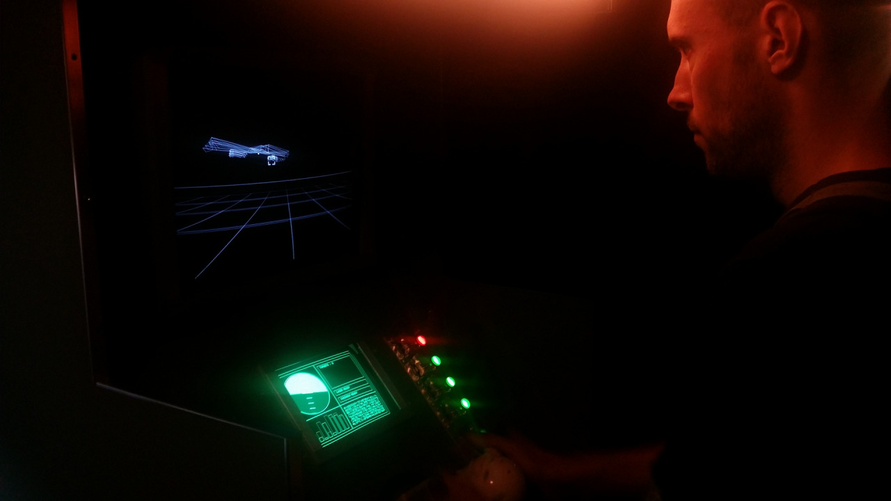

I believe this is the first vector arcade game made in a good 30 years. I can’t imagine it’ll come to Australia, but I’d love to see it.
I love vector games so much. That hot phosphor glow is un-emulatable, no matter how many post-processing shaders you hurl at it, and it makes finding an Asteroids unit operating in the wild just feel that much more special.